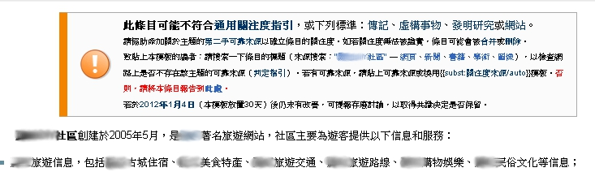
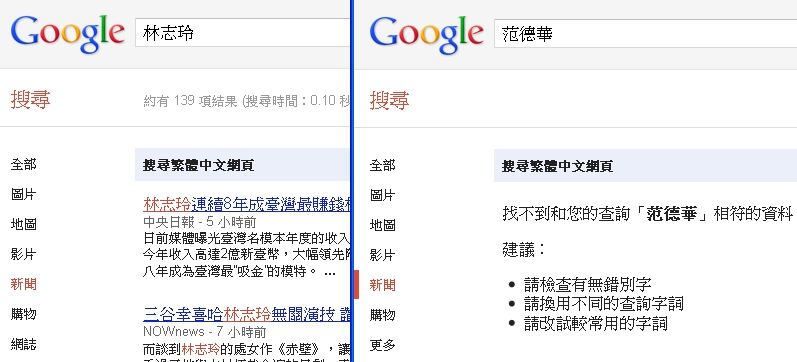

也紀念我們永遠的朋友 李士傑先生（Shih-Chieh Ilya Li）。
維基化．話維基(4)－我的條目不出名？
《大英百科全書》的中文版大約 20 冊，可能足以填滿你家的一層書櫃－當然，大部分的人家裡應該不會有這種書，可能得要到大圖書館裡才能找到他們的蹤影。但是無論如何，每個人都知道如此龐大的出版品，能夠搜羅的知識仍只是滄海一粟。你不會期待能在其中查到這個世界上所有的蝴蝶種類、戰機型號或者文學家生平。你知道即使是全球知名（或者在英國人心目中全球知名）的知識，也有可能只能分得數行簡單定義的介紹。
對於「無窮」的想像
在維基百科興起之前，我們無法想像一個幾近無窮的百科全書存在。紙本的百科有儲存、記載、查閱的種種限制；而電子百科即使克服了這些困難，也無法在有限的編輯時間與人力之下達成任務。維基百科的出現卻給了所有人類一個窗口，理論上，只要維基百科不倒、硬體持續擴充，社群薪火相傳，就算不可能成就「無窮」，也可以快速地逼近將人類所有已知的知識全部收納進來的偉大成就。
這個偉大的夢想為編輯維基的工作帶來使命感，但也造成了一些過度執著的盲點。很多熱情的編者踏入維基之後，急切地把心目中覺得重要，而平常可能難以刊入百科全書的知識通通陳列到維基百科上，滿心期待這個號稱「海納百川、有容乃大」的新玩意兒，能夠承認他心目中重要的事物，也是人類知識的一環。
然而這些熱情的朋友可能在幾小時或幾天之後收到了來自維基百科的通知，其他的編者捎來訊息表示條目沒有「關注度」可能要刪除；而且無論他怎麼申論這件事情的重要，好像也是對牛彈琴，一堆不認識的ID紛紛投下刪除票，最後管理員彈指之間讓條目煙消雲散。對於新手來說，這可是晴天霹靂的打擊，有人從此心灰意冷離開維基、有人開始痛批維基人量小無知，無論如何都不是一個圓滿的結局。
為什麼會這樣？因為「無窮」並不意味著毫無限制的節選，維基百科如果來者不拒，遲早有天有人會把巷子口賣臭豆腐的老王都寫出條目來。回歸維基百科的本質來說，一部百科該收錄的自然是大眾有可能去關心查閱的知識，而不是所有人腦中記憶容量的總合。所謂的「關注度」，其實就是訂立一個標準去判斷這是否是個值得查考的「知識」。
你的偶像並不是沒有名
目前維基百科的編輯次數上，有很大的一部分都關注在演藝人員的相關條目。因為比起看了就讓人頭大的數學式、背過就還給老師的文學家來說，偶像的資訊是比較親近而容易取得的。加上粉絲有為偶像宣傳的熱情，行動力一定高過於願意分享專業知識的專家學者。關注度的問題於是常常在演藝人員類的條目中引起爭議。畢竟對於粉絲來說，維基百科准不准許收錄他的偶像還是其次，但是被維基百科認定心中的偶像「沒有名」，那可真是重重地傷害了他的情感認同。
▲ 圖1：光是在條目中聲稱這是個「知名網站」是沒有用的，依然會被提報缺乏關注度
但其實，把關注度解釋成「有沒有名」，實際上是一個天大的誤會。因為有沒有名是一個浮動的標準，例如演藝人員可能宣傳期聲勢浩大，但只要三個月沒曝光就被遺忘。而一個諾貝爾化學獎的得主，可能只有化學史研究者才聽過他的名字，但不意味著此人在維基百科上不值得收錄。關注度考量的是這個事物是否足夠重要，重要到有文獻專門介紹。所以，要符合維基百科關注度的限制，讓條目可以保留下來，最重要的地方還是找到第三方可靠文獻的深入介紹。
所謂的「第三方」，指的是與該藝人沒有直接關係的機構。畢竟藝人的經紀公司、唱片公司為了推銷他，可能會架設官方網站、部落格來放消息。這些媒體不管重不重要的人都可以自己建立，不但無法證明他的重要性，其中的消息更是會一面倒地只有正面訊息，所以可靠性也是要打上幾折的。而所謂的「深入介紹」則是必須以條目的主角為文章的主軸，如果只是一篇活動報導中提到某人會出席，當然也不可能證明他有多重要。
實際上，比起很多條目來說，藝人的條目已經很容易合乎維基百科的規則了，因為宣傳期總是會有媒體曝光的機會，而且藝人條目的參考文獻可靠度也不會太過要求，多來幾家報紙雜誌的報導就行了。有些生活常識因為人人都知道，文獻往往不會加以介紹；有些知識因為極為專業，沒有經過同行審查的學術論文，單憑媒體報導並不能採信。這些知識想要合乎關注度的要求，往往單憑網路、報紙等大眾化的管道無法取得文獻，還得老老實實去圖書館翻書才行。相比之下，為了偶像多做點功課，應該是理所當然的吧！
▲ 圖2：志玲姊姊的媒體報導，比 1910 年諾貝爾物理獎得主好找多了
媒體不愛的小孩怎麼辦？
我們不得不承認，任何的標準化的結果，都會出現遺憾。維基百科以文獻來當做衡量關注度的準繩，避免掉了知名度忽高忽低、以及大眾文化知名度遠勝枯燥知識的問題，然而往往也被人提出質疑，認為這樣的標準過度受制於媒體。很可能一個重要的次文化現象，卻因為上不了學術殿堂，又被偏食的主流傳媒忽略，導致文獻缺乏。這些很多人想查找的重要知識，豈不因此而無法登上維基百科？
對於這種媒體不愛的小孩，在找出一套能夠不被個人主觀意見干擾、客觀評斷關注度，同時又不受制於媒體報導的標準以前，恐怕真的只能被割愛在維基百科之外。然而被拒絕在外並不代表世界末日的存在。維基百科是隨著時間不斷在增長的，並不是定稿付梓之後，要改版得等上數年的紙本百科。換言之，一時不符合關注度的要求，不代表永遠不符合。若這個事物真的具有重要的影響力，可以想見在出版發達的今日，總有一天會有人研究它、報導它，甚至你自己就可以試著研究、著述並尋求審查和出版，屆時維基百科依然能夠登錄。
而如果真的急於分享，其實也可以試著利用其他的管道，例如專題性的 wiki 站台。並不是每個 wiki 站台都以「百科全書」做為本質，規定也相對不會那麼在意文獻的重要性，就讓其他的站台來肩負及時紀錄的工作，讓維基百科收集經過時間淘選、較為純粹洗鍊的知識，才是合理的分工。維基百科畢竟有他自己的使命與定位，不可能涵蓋所有的需求。就讓維基的歸維基，其他的歸其他吧！
作者簡介
Reke，台灣維基社群成員，PTT 電影板板主，主業為文字工作者。著迷於電影，耽溺於文字；在現實裡怯弱地柔從，在評論裡驕傲地反抗。電影部落格：https://rekegiga.blogspot.com/
您也許有興趣閱讀以下文章:
- 維基化．話維基(7)－誰才是專家？（下） - 2012-02-17
- 維基化．話維基(6)－誰才是專家？（上） - 2012-02-06
- 維基化．話維基(5)－「官方」的迷思 - 2012-01-16
- 維基化．話維基(3)－誰是條目的所有人？ - 2011-11-24
- 維基化．話維基(2)－讓政治爭議不再棘手 - 2011-11-09
- 維基化．話維基(1)－從腦袋開始維基化 - 2011-10-24
自由軟體鑄造場電子報 : 第 187 期 PaaS：程式語言開發在雲端「Programming in Paas」（上）
標籤: 維基化, 關注度, notable, 維基百科, 方針, 指引, 寫作指引, Wikipedia,
分類: 自由專欄
專欄總覽


E-Mail：contact@openfoundry.org Address：台北市南港區研究院路2段128號 中央研究院資訊科學研究所 . 隱私權條款. 使用條款